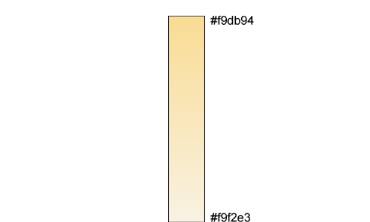
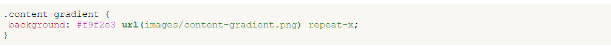
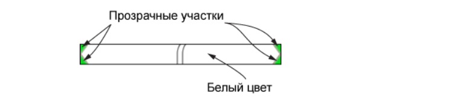
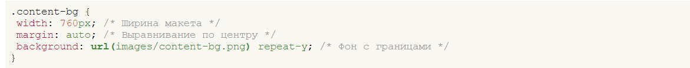
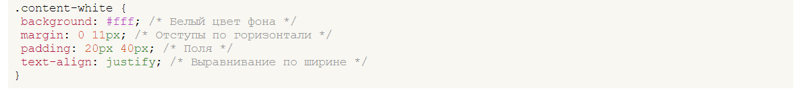
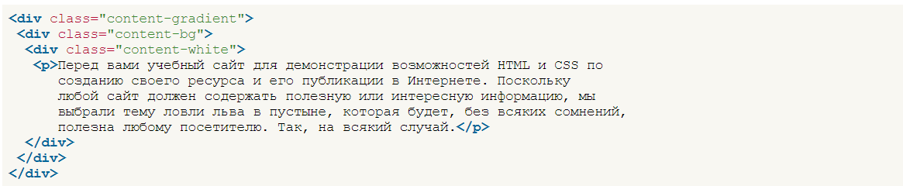

Градієнт
Спочатку підготуємо зображення градієнта у графічному редакторі. Малюнок має висоту 457 пікселів і складається з плавного переходу від кольору #f9db94 (згори) до #f9f2e3 (знизу). Сам градієнт із зазначенням кольорів представлений на малюнку.
Градієнт для основної частини
Зміст на кожній сторінці може бути різним, відповідно висота основної частини також варіюється, тому зробити градієнт з урахуванням висоти проблематично. Ходімо на хитрість і встановимо колір тла основної частини як #f9f2e3, тобто. збігається з нижнім кольором градієнта. Вийде, що колір від темного відтінку плавно перетворюється на колір тла.
Здесь цвет и фоновый рисунок установлен через универсальное свойство background, оно же указывает повторение фона по горизонтали.
Декоративна рамка
Для центральної частини потрібно підготувати фонове зображення із декоративними межами. Воно повинно мати ширину 760 пікселів та містити прозорі ділянки для накладання на градієнт. Як графічний формат найкраще підійде PNG-24.
Фонова картинка для створення кордонів
В стилях указываем ширину макета, выравнивание по центру и фон с повторением по вертикали.
Текст додавати поки що не можна, тому що не визначені поля (padding), так що текст накладатиметься прямо на кордон. В принципі, нічого не заважає включити їх для шару content-bg, підкоригувавши ширину, але треба взяти до уваги ось який момент. Білий колір фону виходить шляхом вставки фонового малюнка і у користувача, який відключив показ зображень у браузері, жодного білого фону не буде. Треба передбачити таку ситуацію і додати ще один шар, у якого буде білий колір фону, необхідні відступи та поля.
Значення margin підібрано, виходячи із ширини «зубчиків» кордону, padding ж за бажанням. Також додано вирівнювання тексту по ширині. Остаточний код показаний у прикладі
Основна частина сторінки
Властивість text-align успадковується, тому немає значення, якого шару воно додається.